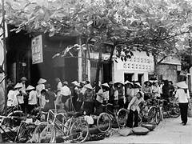
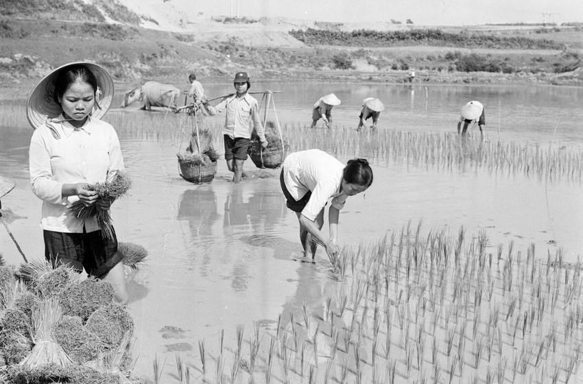
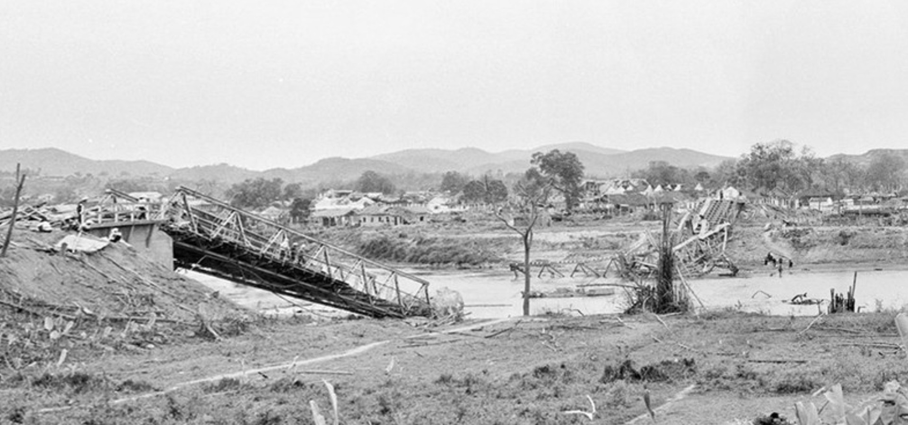
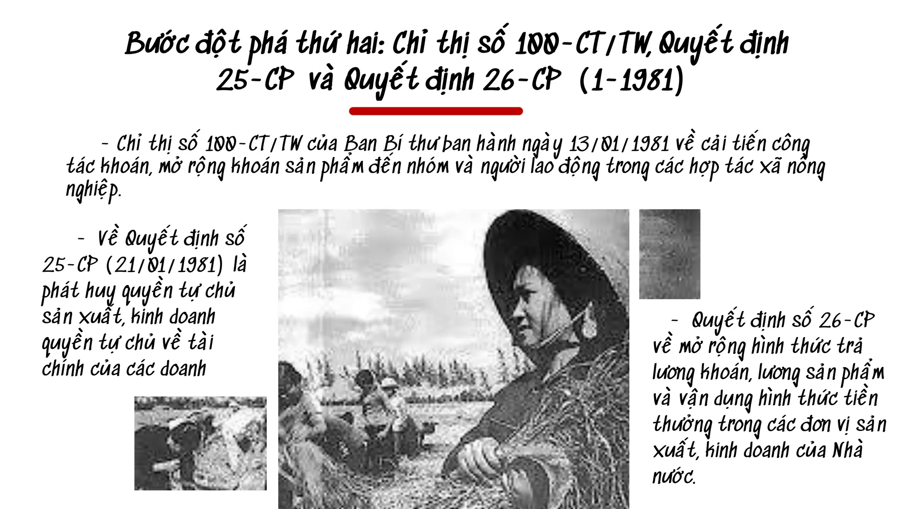
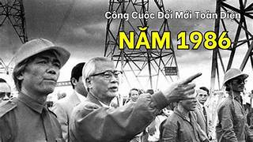

Đời sống sau chiến tranh
Thiếu lương thực, hàng hóa thiết yếu và hậu quả nặng nề của bom mìn, chất độc hóa học.
KHO TƯ LIỆU
Các hồ sơ tóm lược những vấn đề cốt lõi của giai đoạn 1975-1986, đi cùng ảnh tư liệu trong đúng bối cảnh.
Từ hậu quả chiến tranh, công cuộc khôi phục đến những tìm tòi mở đường cho Đổi mới.

Thiếu lương thực, hàng hóa thiết yếu và hậu quả nặng nề của bom mìn, chất độc hóa học.

Khoán sản phẩm đến nhóm và người lao động đã tạo động lực mới cho sản xuất nông nghiệp.

Hàn gắn giao thông, phát triển thủy lợi, xây dựng Thủy điện Hòa Bình và khai thác dầu khí.

Biên giới Tây Nam và biên giới phía Bắc là những thử thách lớn sau thống nhất.

Cơ chế tập trung quan liêu, bao cấp kéo dài làm kìm hãm sản xuất và đời sống nhân dân.

Từ thực tiễn sản xuất, Đảng từng bước hình thành tư duy mới trước Đại hội VI năm 1986.
Đất nước thống nhất nhưng điểm xuất phát rất thấp. Đảng chủ trương hoàn thành thống nhất về mặt Nhà nước, hàn gắn vết thương chiến tranh và xây dựng quan hệ sản xuất mới.
Cả nước khôi phục giao thông, sản xuất, thủy lợi và phát triển vùng kinh tế mới, đồng thời bảo vệ biên giới Tây Nam và biên giới phía Bắc.
Hạn chế của cơ chế tập trung quan liêu, bao cấp đặt ra yêu cầu đổi mới quản lý và phát huy quyền chủ động của cơ sở.
Đại hội VI khởi xướng Đổi mới toàn diện, đổi mới cơ chế quản lý và hướng đến cải thiện đời sống nhân dân.